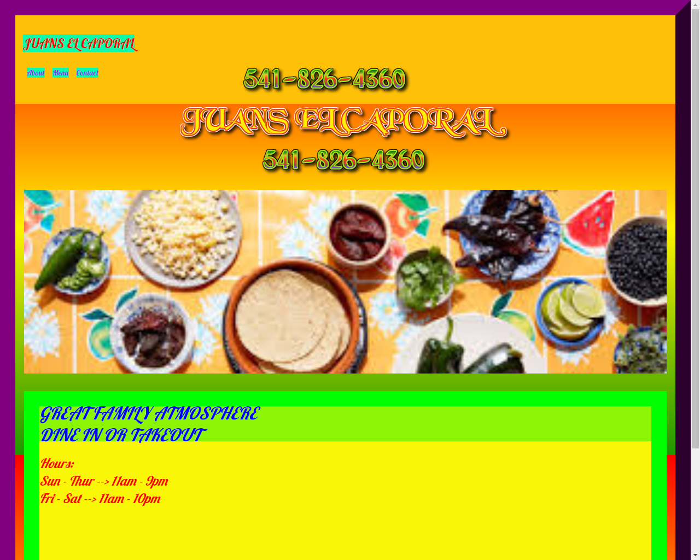

project days
This is a website for a towing and recovery business. I used a template for the mechanisims. I did all the design.
You can see this at

This is a website for a for a restraunt. I used a template for the mechanisims. I did all the design.
You can see this at

This is a video of a website I designed for My Final Project At CSU Global for
the Web Design and Development class